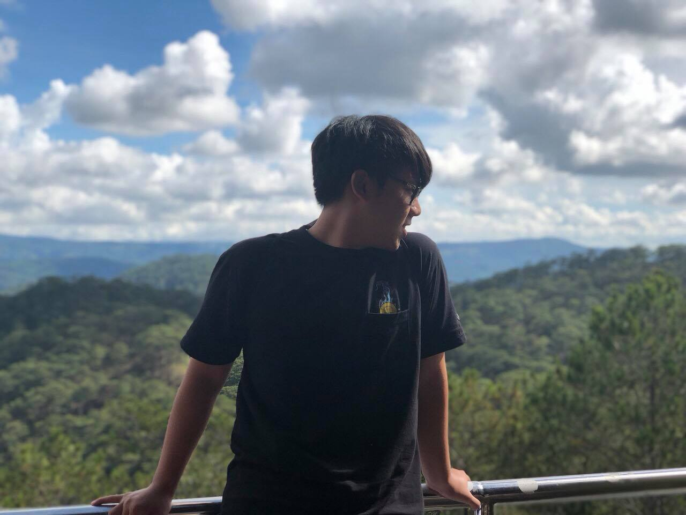
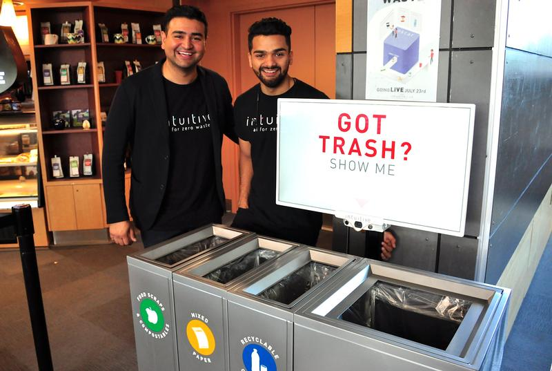
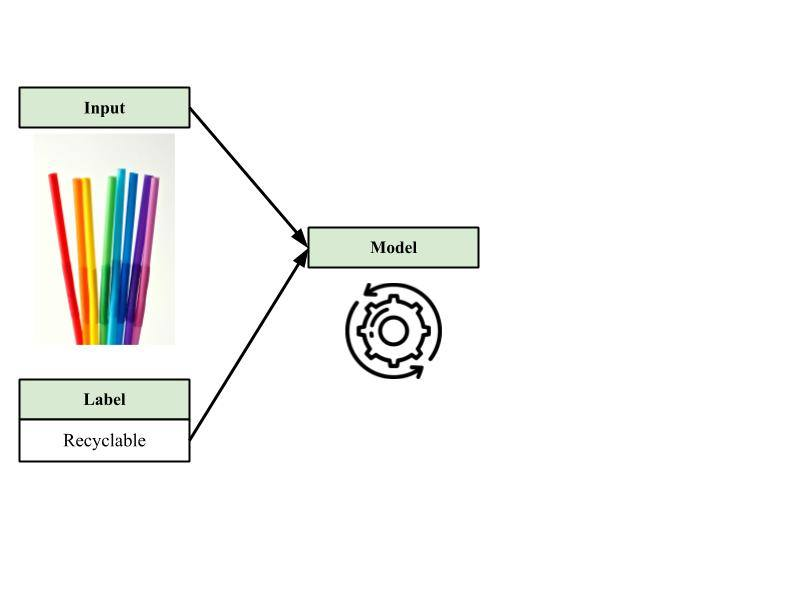
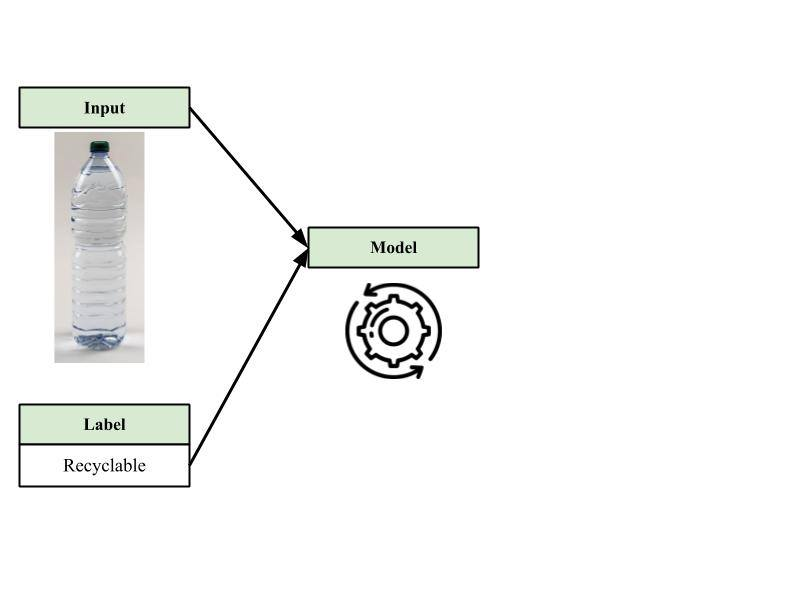
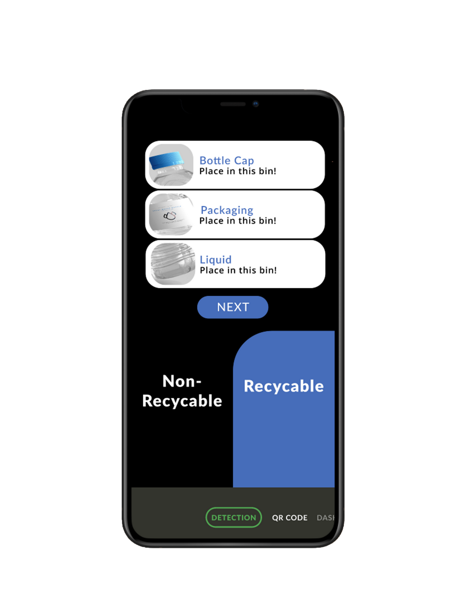
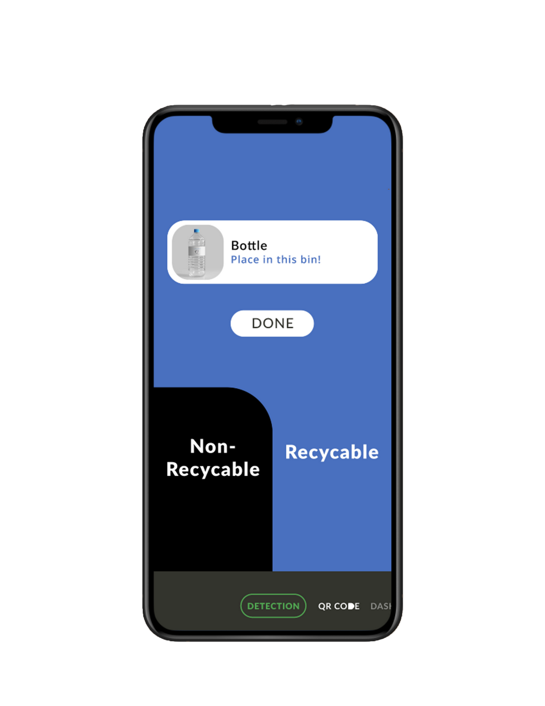
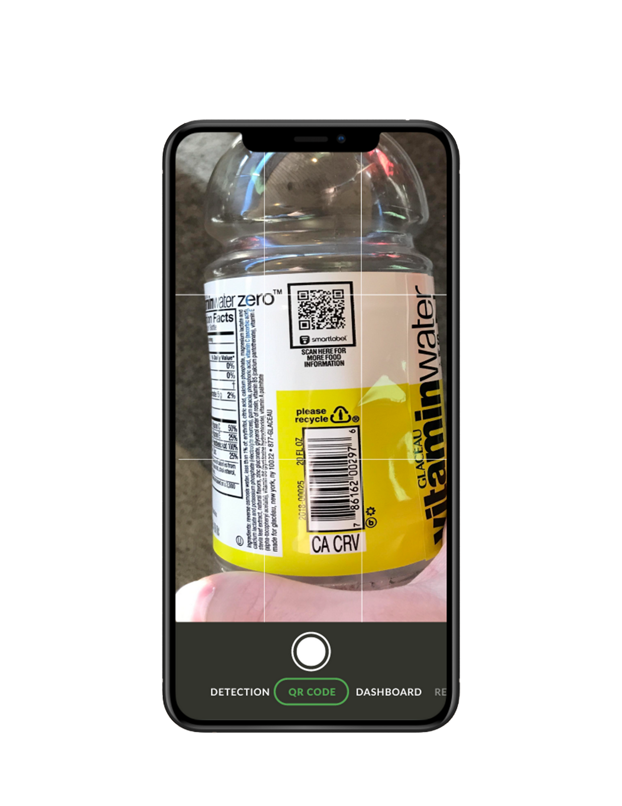
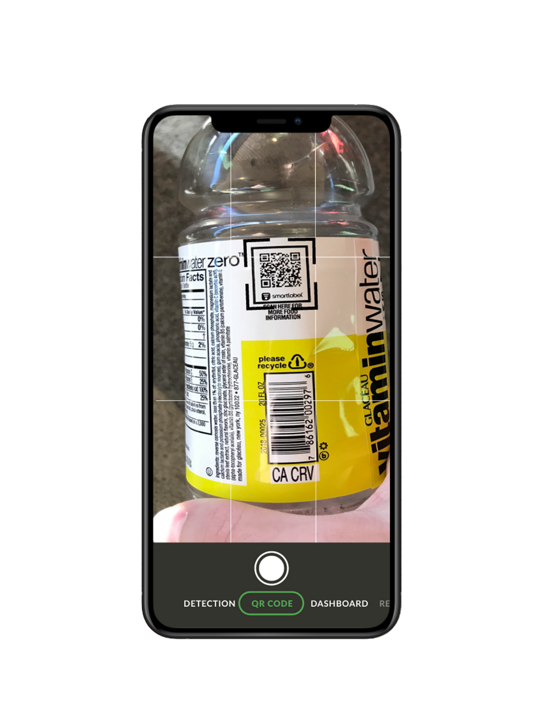

My name is Nguyen Kien Vu, but I prefer to be called “Leo”. I used to study at the University of Technology Sydney for two years, but later I returned to Vietnam due to the pandemic and transferred to RMIT. Since I was a kid, I have been passionate about video games such as Road Rash and Half-life, and now I enjoy playing new ones like League of Legends or FifaOnline4. Besides, I am very keen on cooking in which I love watching cookery shows and practicing those recipes. I was also into drawing which I used to dream about becoming an architect, but I found that drawing was too challenging for me, so I dropped it.
Yet, I found my fascination in the IT field, which is web development, as I have always wanted to create creative websites for everyone to use and I also enjoy coding after trying out Pascal. Moreover, I am aware of the growing interest in surfing the Internet and the chances to associate with international corporations. Having studied at RMIT for 12 weeks, I have acknowledged the basis of web development by working with HTML, CSS, JavaScript and acquired knowledge from other courses like database application or Python. Soon, not only I will be able to develop webpages, but I also aim to involve in game development, and I will study hard to achieve my goal.
Bui Dang Khoa - Android Developer
My name is Bui Dang Khoa and I am a freshman at RMIT. When I have free time, I am into playing video games like Cytus, Dark Soul, and Rainbow 6 because I am inquisitive about how the game tells its story to me and how I can interact with each character in that game. I am also keen on watching anime, especially cooking one, because not only is there a vibrancy of the animation and characters, but it also provokes my interest in cooking. The other hobby that I have is listening to music in which many songs come from either video games or anime and most of them are sung in Japanese.
On the whole, my hobbies have captured my interest in IT since I am fond of video games, so I have always wanted to develop video games that will be widely-known around the world just like Resident Evil or Doom. Hitherto, I have only studied how to code using Python and had some experiences with web programming with the use of HTML, CSS and JavaScript, in which I am still quite far from my ultimate goal to engage in the video game industry. In the future, I will take more courses related to video game development to enhance my technical skills and other supporting classes like cybersecurity, Java and Ruby. At the same time, I am going to try hard to master my skills in HTML and Python.
Hua Minh Thu - Project Leader
My name is Hua Minh Thu, but you can call me “Jess” for short. I used to study at Crescent Heights High School for three years in Canada and if it was not for the outbreak, I would have ended up in UAlberta and majored in Pharmacology. However, I have no regrets about my decision to return to Vietnam and enroll in RMIT. As I own a Pomeranian dog named Kiki, it comes as no surprise that I really enjoy walking him at the park, yet, I also find myself taking pleasure in graphic designs. Therefore, I have taken some courses in Photoshop and Illustrator, which now I can create any graphics without having to download from the Internet.
Currently, I pay great attention to machine learning (ML) because having worked on some assignments related to the front-end makes me realize that I am no longer keen on full-stack development since I do not see my potential in this area, yet I like working with data. So far, I have taken three courses at RMIT and earned some experience in which now I can create websites using HTML, CSS and a little bit of JavaScript. I also work on a database application project which closely connects to the real-life application and involves the use of MySQL along with database creation. I also get used to using Python and keep on practicing to master it.

Nguyen Tung Nghia - Data Scientist
My name is Nguyen Tung Nghia, but most people called me "Billy", a nickname given by my dad with a hope that I would be a successful figure like Bill Gates or Bill Clinton. I started to study abroad in Canberra after I had finished grade 11 and then moved to Melbourne one year later to study at Monash College. Like my teammates, I would have majored in Computer Science at Monash University if there was no outbreak in Australia, so I moved back to Vietnam and became an RMIT student. My hobbies are walking my dogs, listening to music, playing video games and I am especially into football. I used to be an active member of a rap band called "S2G '' but since the group disbanded so I have stopped publishing tracks on SoundCloud and YouTube.
There are two fields that I fascinate about IT which are ML and data science because I was impressed by bots used in the stock trading market and my ideal job is to become a data scientist. However, I have just learned how to code at RMIT, so my ability and experience are very few in which I get used to Python, SQL and HTML. Therefore, I will push myself to familiarize myself with more advanced programming languages and study more about processing data to prepare for my future occupation.
Group Process
We believed that we had done a pretty decent job in our writings as the report was well-written so there was no need to revise or rewrite many times. In our opinion, the aspect that we have done the best was communication because most members very actively updated their progress and asked others for help whenever we needed it. Yet, sometimes we went in circles in which we were very active in planning the work for the upcoming week, but nothing much was done by the end of that week due to factors like in-class tests or deadlines from other courses. Thus, we had to shift to high gear the other week in order to keep up with the development progress and deadlines. As a result, there was an imbalance of work progress so our group suggested for future assignments that the first thing we would do was to team up as early as possible. This meant that we must engage more in socializing and reaching out to people so that we could get a good team with people who we actually understand. This is because we thought that the reasons why our group did not work productively was that we did not get along with our members enough to fully know their strengths and weaknesses. Consequently, the assigned work might be too difficult for them which would take extra time to get done or it might be too easy that they did not bother to finish it early. If assignment 3 could be extended, either we will develop the website from scratch so as to prove our abilities to deal with web programming or we will work on the actual prototype in which the smartphone app can run like a real one. However, with the limit we have no choice but to choose more efficient ways to get things done like using open-source for our website or having only illustrations of our project.
Career Plans
Our members share the common goal which is to achieve a bachelor's degree in Information Technology, which will open up more job opportunities for us in the industry because the studying process offers us solid knowledge together with technical skills based on our specialization. Each member agrees on following the program structure suggested by RMIT for the freshmen, however, one of us prefers taking fewer courses for the next semester because she would like to develop soft skills. In particular, Thu decides to take only two courses for the next semester because she wants to join in some clubs so that she can step out of her comfort zone and improve soft skills like socializing. Starting from second year, we will take more advanced courses like program electives so that we can gain in-depth knowledge corresponding to our specialization. In detail, Khoa will take a game development course because he would like to become a video games tester, so he needs to understand what are elements made up of a video game. Vu will register for web servers and web technology as he once expresses his ideal job as a web developer and it is important that he can differentiate between HTTP and HTTPS. Nghia will have an algorithms and analysis course since he desires to become a data scientist so it is a requirement that he knows Java and C. Thu tends to apply for database application courses because it is related to her ideal job which is to become database administrator. We all also take internships into consideration in the third year because we will be able to engage in the actual working environment, and it is essential that we acquire enough experience to later apply for an entry level position. Some of us do so by taking a program elective which offers students with internships from RMIT partners and the others choose to apply for other firms that they know. For example, Vu prefers the second option since his brother has a company so he can intern and save that program elective for other courses that he is interested in. By following this plan, all members will end up with a bachelor's degree and be able to gain enough solid knowledge, technical skills, working experiences as well as fully develop soft skills to get entry-level jobs in our desired fields. Nevertheless, the degree is only the prerequisite and there is more to achieve so that we can strive for the higher level of our ideal jobs. Therefore, some of us decide to pursue postgraduate education like Thu who would like to earn a master degree in data management or Nghia who wants to further his education in finance and stock. There are some jobs that also require certifications in order to help with job advancement. Such cases are Khoa who needs an ISTQB certification from ASTQB or SAS Certification for to-be data scientist like Nghia.
Project Description
Overview
In an effort to reduce plastic waste in Vietnam, our project proposes to develop a smartphone app that incorporates machine learning into waste classification. This app is called “Wappro'', which enables users to recycle plastic trash with less involvement of manual sorting by using real-time object detection. In case there will be malfunctions during the progress, the barcode scanner is an alternative to the detection feature. Based on the identified type of trash, the app will recommend various ways to recycle and indicate respective bins for users to throw the trash in, which involves a dynamic background. Users can also keep track of their waste and get rewarded based on the data aggregated from the dashboard. The app makes it easier for users to search for specialized centers where to safely dispose of unusual trash such as toxic chemicals. On the whole, this mobile application will be available for cross-platforms, both Android and iOS so our market users are anyone who owns smartphones based on these two platforms. In addition, our group would like to get the attention of those who are not fascinated by recycling so that we can help them to spark their interests with our sophisticated features, and thus, encourage them to engage more in saving the environment. Moreover, it is obvious that users like environmentalists or those who enjoy recycling will have their eyes on this app so we think that this mobile app will have significant potential to be widely used once it is fully developed.
Motivation
Firstly, our team realizes that it is not difficult to pass by a collection of disorganized trash bags piled up on the streets, which not only mars the scenery of the city but also affects the health of people who live nearby. Moreover, these bags take up a lot of space which can be used for other purposes such as parking, hamper pedestrians, and even obstruct traffic.We believe that the key reason behind this phenomenon is the lack of a waste bins system in Vietnam which people have no choice but to throw everything away in the same trash bin, and thus, it will take more time later to filter them. Particularly, it is noticeable that the Vietnamese tend to offer green bins as the trash bins so by default there is no need to classify the trash items before throwing them away, which we find very aggravating.
More GREEN bins for Vietnam
In addition, our team has three members who used to study abroad for a period of time so they have learned that developed countries like Australia and Canada offer several bins of trash for different purposes. Most of the time, trash will be classified into organic waste, recyclable and non-recyclable, which respectively are represented in green, blue, and black bins. By doing so, it makes waste processing so much more convenient as each type of trash has a certain treatment. Assume that one day Vietnam applies the same method, it will be very challenging for a lot of people to adapt and learn what to put in each bin. Therefore, it is a great choice to have an app that helps with sorting trash in the first place and people can easily get used to the new adjustments. As a result, we believe our product will benefit the society in such a way that it not only saves the environment but also makes waste processing effortless.
Secondly, our team acknowledges that there is a lack of understanding about waste classification in the community that we would like to take a chance to cultivate people about it through the usage of our app as people tend to learn from their experiences. According to a 2019 survey carried out by World Wide Fund For Nature (WWF) Vietnam, there are 1000 respondents, who are families, small businesses related to households and waste collectors, gave their opinions of trash discharge in two big cities, Hanoi and Ho Chi Minh City. As a result, there were slightly over 30% of families who sorted trash at the source, more than half of the waste collectors manually classified trash and almost 80% of respondents had little to no knowledge about plastics and regulations on recycling which is our motivating force that we would like work on to improve everyone’s understandings about waste classification. Yet, it was a positive signal that the survey also found nearly 80% of respondents cared about saving the environment, the impact of plastic waste on their health, and thus, they are willing to change and learn in order to make their concerns achievable.
Last but not least, the reason why we choose this project idea is because it gathers all of our group’s interests and the IT trends at this point. In particular, we have two members, Thu and Nghia, who are keen on artificial intelligence (AI) and machine learning (ML) so this project will offer them opportunities to experience the working process of these industries, and thus, they can justify the ideal job later if they find these fields no longer meet their expectations. Furthermore, our project proposes to create a mobile application so it must involve mobile app development which also covers many other skills that are related to IT, such as the use of user interface (UI) design which can be utilized in both mobile app and game development. These relevant skills can support our member, Khoa, with his pursuit of becoming a game tester in which he can acquire knowledge about game UI. Moreover, coding with multiple programming languages like Swift and Java will enable our member, Vu, to pursue his career as a web developer, specifically, he can become a versatile developer who has an ability to adapt to any industry trends. Overall, this project will offer our group members working experiences and specialized knowledge at a small scale within the RMIT community in the pursuit of our desired IT positions. Based on our insights into the development progress, we can reconsider our ideal jobs at an earlier state and make up our minds to follow other career pathways if needed.
about our APPLICATION
On the whole, our smartphone application is built to minimize the need for manual waste sorting, especially for trash collectors and specialized centers. Besides that, the motivation of our product is to encourage environmental sustainability towards RMIT students in the first place, and it will be available for any users once it is fully developed.
Landscape
There have been a lot of similar recycling products that are available in App Store and Google Play, in which they carry out features that are much the same as others like finding accessible recycling locations or suggesting million ways to recycle items. Indeed, our project also shares these features in common, yet, we have not seen any innovation from these existing apps that we come up with this unique feature which differentiate our mobile apps from the available ones. In particular, this feature is greatly inspired by the Oscar trash sorting robot which was founded by two SFU Mechatronic System Engineering students. However, while Oscar is empowered by an AI camera with the support of a display screen, our project aims to take advantage of the smartphone’s camera feed and develop a software that integrates object detection. It is obvious that Oscar greatly relies on the hardware and our project focuses on the software. Compared to other available apps, our product will allow users to identify waste in real time with the use of machine learning, whereas other apps only offer users a list of recycling items and require them to match up the waste to the list. This consumes a lot of time if one item is made up of different materials so this feature will save a lot of time on manual sorting. Besides that, other features work much like the pre-existing application but we strongly believe once the object detection is fully developed, it will become our exclusive feature that none of available products can ever do.

Aims
This project aims to develop an innovative smartphone app that incorporates machine learning into sorting plastic trash together with additional features to catch people’s attention. As a result, the app will be able to reduce the need for manual sorting and encourage environmental sustainability.
Goals
Login Features
It is essential to have the login feature at this point because our group is working on a small scale within the RMIT community so there is only a limitation of users who are permitted to access our product. For this feature, we mainly focus on the design which serves as the users’ attraction so that more people are willing to give it a try since it not only appeals to them but also gives a sense of security for their personal information. In particular, we would like to keep everything in the design at the front and center so they are visible to find and there is minimal information displayed on the screen so that it will not obfuscate the login area.
Object Detection
It is our foremost goal to develop object detection that incorporates into a smartphone app so that it can quickly identify plastic trash and sort them into the corresponding bins. This is because it will become an innovative feature once it is well-developed, which helps our product uniquely differentiate from other available recycling apps. In order to do so, the feature will involve a lot of algorithm development so that it meets our desired outcomes which are real-time speed and accuracy. In addition, most of the available algorithms are the base models that serve as the foundations so it saves us a lot of time on starting from scratch. Lastly, it is difficult to find one algorithm that works well on cross-platform, both Android and iOS, so it will be groundbreaking research into object detection algorithms if we can make this possible.
QR Code Scanner
The QR code scanner serves as a necessity in this mobile application, in which this feature is an alternative to object detection in case it ceases to function during the operation. Moreover, there is a limited number of plastic waste having a QR code printed on the packaging so this feature will not be able to efficiently identify all the plastic trash. However, we can not deny the benefits that the QR code scanner brings which are time-saving and fewer errors. In detail, the QR scanner is also a means of identification, and thus, it still requires less manual sorting if users successfully scan the QR code on the object's packaging. In addition, it cuts down human errors of classifying trash since there is equivalent information about recycling embedded in QR codes. As a result, this feature also greatly contributes to automatic trash sorting.
Dashboard
The dashboard feature will serve as a means for users to keep track of their uses by data visualization and look insights into their contribution in order to make impactful decisions. Similar to Snapchat where the number of snap streaks beside an emoji tells you how many days you have snapped to other people and the higher the number, the more commitment you put into so that you will not break the chain. Thus, we would like our users to have this feature recorded all their usage of object detection and QR code scanner so that they can acknowledge the long-term benefits of trash classification from the data and make decisions to keep on recycling. What’s more, the dashboard serves as a data aggregation for reward feature in which for every time object detection or QR code scanner successfully implemented, it will record all the data and then visually represent it in a way that best expresses statistics. It is our target to use a bar chart to display the dataset with the purpose that users can easily interpret and compare data between days in a week. In addition, we include streak areas where the users are able to count the number of points they need to get rewarded and how many consecutive days they have recycled together with the total of sorted items on each day
Rewards
In order to attract more people’s attention to use our product, we offer the reward feature which uses data aggregation from the dashboard feature to redeem for coupons or vouchers. At this point when we carry out this mobile app on a small scale of the RMIT community, it is important that we have financial support in order to make this possible or else we have money troubles to maintain this feature. Therefore, either we reach out to RMIT sponsorships and funds for the reward feature to perpetuate, or we will end up with fewer users owing to a lack of captivating factor. As a result, it is our goal to attract corporate sponsors from RMIT or their partnerships as in return RMIT can earn a reputation for the research and innovation with impact or it is an opportunity to enhance student life on campus.
Location
For future pursuits in developing a mobile app that is able to sort different trash types other than plastic waste like organic waste or even hazardous chemicals, we would like to have a location-based feature so that it can list all drop-in centers for specialized trash based on users’ current spots. In particular, this feature will identify the users’ current locations and return a collection of nearby centers where specialize in dealing with uncommon waste like batteries, which will be represented in the form of a red circle. Furthermore, based on the users’ current positions, this feature can estimate the distance and direct the shortest route to the selected center, which works in the same way as Google Map does.
PROGRESS
First of all, our group teamed up on week 9, which made us have to do everything in a rush to keep up with the deadlines, including the topic selection for assignment 3. Therefore, the whole team had an immediate meeting to discuss the possible project idea which not only satisfies all interests of our members but also causes an impact on society. According to assignment 2, Vu and Khoa shared their interests in game development which was available on smartphones, Nghia came up with the idea of building a FAQ website that recommended perfume scents for users, and Thu aimed to develop a smartphone app for waste classification by applying machine learning. Our group allowed each member to describe their topic ideas and persuade other members, as a result, Thu succeeded in convincing us with the detailed description and her inspiration for this project. In particular, Thu used to study abroad in Canada for three years, and luckily, her city where she lived, was selected as the location for the AI trash sorting robot, Oscar, to station. She was amazed at how the machine worked in which it was driven by a powerful AI camera attached to the bins together with the display screen demonstrating to users how to recycle each item and which bins would they use.
Secondly, our group decided to name the mobile app “Wappro”, which was short for waste processing and the “pro” also meant professional. After all, it was our intention to deliver a professional waste processing app to our users. Moreover, we thought that the title of the app would also attract more users in Vietnam because “Wappro” could be pronounced as “Quá Pro”, which made it very interesting and amusing to say.
Thirdly, our team gathered for another meeting to brainstorm and elaborate more on the selected idea by pointing out the pros and cons of the given features, which were later used to suggest what could be done to improve the quality of our product. There were many proposals on the existing features and one such recommendation was to build this mobile application only on the iOS platform, whereas the initial intention was cross-platform. This was because our group presumed that having our product available on the two most well-known operating systems, iOS and Android, would allow more users to get access to the app. Nevertheless, there were many aspects in need to take into consideration including our experience working with the Android platform and prototyping an Android mobile app together with the iOS one in a limited time range. In detail, none of our team members had used Android smartphones before and it would take some time for us to adapt to the new operating environment. Yet, we would not have enough time within 16 weeks to switch from iOS to Android smartphone and figure how it would work since it involved lots of steps such as backups, data transfer, and re-installing. As a result, it would end up a waste of time if we maintained our decision to work on developing the app on the Android platform, so the team chose the best option was to deploy our product only on iOS operating system. To make the project idea more comprehensible, our group leader, Thu, utilized Figma, an open-source tool specialized in UI design, to create a prototype that helped us easily visualize the presentation as well as the functionality of each feature based on iPhone 11 pro max. Moreover, our members found the prototype very illuminating, and we were fascinated to know that we could edit the design at any time if we made some changes later in the progress.
Having decided on the platform that our app would run on, our mobile developer Vu and UI designer Khoa suggested that we should focus on designing a minimalist yet user-friendly interface for the whole application. In other words, we would like the overall presentation of our app to look simple along with sufficient information so that users could focus on the core functions that we desired to offer. In particular, the key aspects of the homescreen design that we decided on were simplicity, distinction, and functionality. In detail, we kept everything in the presentation as clearly as possible by placing the login and signup buttons at the front and center so that users would not spend too much time hunting for the login area. Moreover, information was maintained minimal yet sufficient in the area and illustration of recycling was used so that users would know what kind of app they log in or sign up for without reading too much text. The other characteristic of the homescreen design was the distinction in which we differentiated the sign-in section from registration so that our users would know exactly where to go and minimize the possibilities of users trying to log in via the sign-up section by accident. With that in mind, our UI designer Khoa advised using different colours and layouts for the buttons to make the sign-in one distinct from the signup, whereas everything remained simple. In the following prototype, it is clear that the two buttons are different in which the login is fully filled with blue colour, whereas the colour of the signup is blended with the background and there is a blue border surrounding it.
The last aspect that we took into consideration was functionality in which we let users log in or sign up with external accounts. In other words, we utilized social login so that users would not have to create new accounts on our app or memorize another bunch of login detail like usernames and passwords. As a result, social login would save time and simplify the steps of login. In the following prototype, it is apparent that there are social media login and signup at the bottom, including Google, Facebook and AppleID accounts, so we offered users multiple methods that they could use, and it would be up to them to choose their preferred one


Another topic of our discussion was the type of object detection that we would like to work on. As we mentioned earlier, this was the foremost feature that we desired to innovate so Nghia and Thu who were in charge of this area had done a lot of research through scholarly articles and scientific journals on object detection in order to come up with the best solution. Our initial option was to develop 2D object detection because there were so many pre-existing algorithms that we could use to customize in order to meet our expectations. The team had found some available algorithms together with the respective GitHub repositories and tutorials offered by TensorFlow. By using them, we could figure out the models by ourselves and optimize the progress as we did not need to start from scratch. Our plan carrying out this feature was to apply supervised learning that during the training, we would feed the model images with the corresponding labels, which were recyclable and non-recyclable so that the model would learn to identify objects and make predictions of the labels. Our members, Nghia and Thu proposed to feed the model sufficient training datasets with high quality rather than having too much data which could consume lots of storage. We assumed that there would be a minimum of 1000 images per label and we would focus on gathering images of everyday objects. For instance, the training datasets for the recyclable label would consist of beverage bottles, yogurt and butter tubs, whereas the inputs for the non-recyclable label would include flexible packaging, plastic bags, etc.
On the whole, we learned from our research that there were some advantages of the 2D object detection including TensorFlow had offered various pre-existed models of image classification, such as MobileNet, Inception and NASNet. Hence, it would be up to us to pick out the one that best meet our needs which was the balance between three metrics: performance, accuracy and model size. This was because the feature would be integrated into our mobile app so our members did not want the model size would be too large for the mobile storage which affected the performance as we also focused on the real-time aspect. Ultimately, the 2D object detection should return as precise output as possible so it would meet up our initial goal. In addition, since the given models were trained to recognize the pre-existed datasets so our team could take advantage of transfer learning to retrain the model with our new datasets and make our own version, which would save us time within the recommended time frame. However, there were some disadvantages that we had noticed and one of them was that this model only applied on the single object detection. With that in mind, our team decided that if we had more time after we had finished the initial model, we would try our best to improve the model so that it had the capability to recognize the presence and identify the location of multiple objects within an image and return the corresponding labels. Therefore, the only solution that we could come up with was to use UX design to create a pop-up which would ask the users if there were anything like liquid left inside the object and the app would give a response based on users input.


In particular, the following prototype shows that if users press “No” in the pop-up box, the app will direct them to the new section where the screen displays the background colour corresponding to the bin in which blue represents recyclable. Conversely, if users press “Yes”, the app will direct them to another section to make sure that it notifies users to remove the liquid inside the bottle and then move to the same section as those who press “No” when users click “Next”.


Next, we had some arguments about an alternative to the object detection in case it would cease to function in the future. At first, Thu came up with the idea of using QR code scanner because she noticed that the majority of RMIT students had used QR codes for a variety of purposes like events or showcases information so she believed this feature would not be very challenging to use. In contrast, other members thought that it would not be an effective means because there were fraudulent QR codes so they could expose users’ phones to hackers and companies that manufactured plastic products, would have to print additional QR codes on their packaging in order to meet up with the feature expectations, which might lead to excessive cost. Therefore, we decided to change from QR code scanner to barcode reader and two things we would get done were building the feature and embedding additional information about recycling in the barcode. Nevertheless, after having done research on how to build this feature, we realized that the barcode scanner did not fit what we were trying to achieve, in which the barcode was built to store text information about goods and commonly used in supply chain management to keep track of all the products. As a result, we went back to the previous plan of developing a QR code scanner since we could take advantage of the iPhone’s rear camera which had abilities to spot the QR codes and recognize them immediately without using a third-party mobile application.
requirements
In order to build this feature, our mobile developer Vu would use the built-in AVFoundation framework because QR code scanning was entirely based on video capture and he must get used to using Swift. In addition, since this feature only applied on the single object at the time, so we also developed an interactive feature which worked exactly like the one from object detection. In essence, if the user clicks on “No”, the app will direct them to the new section with a blue background representing the recycling bin or else the user will be transferred to the section with black background.
Followed by the QR scanner was the dashboard, where users could view their analytical activities that were aggregated by our back-end developer Nghia from the number of object detection and QR code scanner successfully used. In the dashboard, our UI designer Khoa would design the presentation with the same concepts as the login section including simplicity and distinction. In detail, we maintained the text as minimal as possible in which we only included greetings and some sentences to explain the function of each illustration. Each graphic served as distinct tasks and were separated into smaller sections within the dashboard so that we could optimize user interface. In detail,
Average Recycling: showing the mean amount of waste that users had been recycled.
Total Recycling: representing the total amount of trash collected and recycled by users.
Bar chart: serving as a histogram which indicated the amount of recycled waste on each specific day in a week.
This feature would be based on the data aggregation from the dashboard in which for every time users succeeded in using object detection or QR code scanner, they would get a point, so the more points they scored, the higher rewards they would get. Moreover, we offered our users several ways to exchange for points, such as if users consecutively used the app for two weeks, they would get double points within the next week, which helped them to earn a reward faster. The other method was referrals, in which for any users whose first time using our app and sharing their experiences to someone else, both the sharers and recipients would earn rewards. Because of this, the existing users would be encouraged to reach out for more users who had not used our product, resulting in the increased number of referrals and usage. Our team believed that this feature would enrich users’ experiences with our product in which users got the rewards and change their behaviours as a result of incentives. Moreover, gamification through point collecting and accomplishments would keep users coming back to the app over and over again, and ultimately, boost engagement.
Roles
Because our team formed just 1 week before the Assignment 3’s beginning duration, we mainly focused on developing the whole report together with equal amounts of work between team members instead of assigning any specific roles, which sometimes can cause problems of lacking work contribution between members. But every team has a leader and this project idea is influenced by Thu, so Thu became our team leader until the end of this assignment. Thu also designs the application’s demo for the team to have a closer look for approaching the keys of this project, as well as performing the “Scope” part, the most important section of any report. Every member in the team contributes greatly and equally, as for developing this report become more professional and academic at the same time. For instance, Khoa is responsible for the Project Description part because Khoa feels confident at writing, especially leading readers to easily understand what our application is about. On the other hand, Nghia’s project is pretty similar to this project as well , which is also about machine learning and artificial intelligence, so Nghia is in charge of expressing detailed description and technical features of this report. Vu is likely considered as a scribe when Vu is accounted for writing down team’s activities, such as timeframe, group processes and communications. As Vu’s work part is not strongly related to technical explanation and more neutral, it is optimal for us to let Vu point out risks, both physical and technical risks, weaknesses of this project. Moreover, Vu is also responsible for completing “Timeframe”, “Skills and Jobs” and finally “Feedback”. However, after sharing our project ideas and ideal jobs to each other, Thu, the leader, assigned us to each specific role. Vu and Khoa are our mobile developers, where Vu will be responsible for designing this application on iOS platform. On the other hand, developing our software on the Android operating system is part of Khoa's duty. Thu and Nghia are the application developer and data scientist of Into the Unknown's team. Thu will primarily check the performance of the program, being a debugger, and the trainer for the machine learning system. Nghia's contribution is more considered as a data scientist, where he will collect feedback from our users. Then Nghia needs to analyze and aggregate that data sets, later he will improve user experience, reports back to the developers team for fixing bugs and errors that occured on the software during the launching period. Each member in the group has their particular role and work, summarizingly, all to make this future application operate well.
Tools & Technologies
Python
Building our main application.
R Language
Teaching the machine learning system.
Figma
Design our software prototype.
Java
Design UI on Android.
Swift
Design UI on iOS.
PowerPoint
Edit our presentation video.
TESTING
We plan to open a closed beta for one month for the test run phase of our project to see if our product is appropriate for our users and to see if they give us positive feedback on changes we need to make to improve our products. This test run phase is open for at least 10 people and maximum 100 people to test the server's stability as this is the first time we create and control an application. To collect the feedback from users, we provide them our webpage so that they can anonymously bring their comments to us whether they are positive or negative feedback. Moreover, we also spend time setting up many face-to-face meetings with users to directly listen to their thoughts on our project and on how we can improve it for further development.
PROOF OF ACTIVITIES
Timeframe
Our project was broken down into 4 equally phases in total of 16 weeks!
Phase 1
In this phase, it is our top priority to complete the assignment 3 report and bring out the best work as possible in the limited time range.
Phase 2
In this phase, our group will focus on learning and developing technical skills through courses and self-learning. Four weeks are expected time for us to have fundamental knowledge together with basic skills to carry out a product.
phase 3
In this phase, it is our goal to develop the app as wholly as possible and continue on learning essential skills in order to develop features that meet our expectation in the project proposal and end up with a fully-developed mobile application.
phase 4
In the final phase, we will put our finished product to the test by putting up a closed beta (within the RMIT community). Such testing is to test the stability of the server and absorb user feedback to optimize the application to make it easier for users to use.
RISKS
Unexpected things always happen when we do not care about it!
Lack of knowledge
First, working with iOS development involves a lot of coding using Swift which at this point our member Vu, who will be in charge of this section, does not have any knowledge or technical experience since we have only started our first semester. Therefore, our only option is to self-study Swift through online courses in order to fully develop the mobile app within 12 weeks. However, the risk comes from this situation is the quality of the final demo will be substandard due to a lack of time to master the programming language and incorporate it into the product.
Algorithms
Similarly, working with machine learning is most likely that we have to deal with algorithms, especially when we have to test many different models in order to find the most suitable one. Once again, we have little to no knowledge and technical skills to deal with machine learning so we might end up not having the 2D object detection feature for our mobile app. With that said, our only solution is self-studying and looking for help whenever needed.
Tracking
Firstly, about the tracking problem, although the application can work smoothly with environmentally friendly criteria, there is no way that we can track whether users recycle garbage correctly or not. Due to the project idea, users just simply scan and easily classify objects but there are no sensors installed in the recycle bins to identify whether the users recycle their waste correctly or not. Obviously, we are still thinking about the solutions for this problem as if we “stalk” users to see their actions after scanning, it affects directly to their privacy.
User Experience
Secondly, about user experience, we are still trying to maximize the functions of this application in order to enhance user experience while using our project due to the battery saving. We are still working on how to minimize battery consumption as nowadays, people use their phone anytime and anywhere and they might reconsider using this application. Furthermore, we are trying to train machines properly so that they can focus only on objects that need to be detected but not people surrounding them that might affect other people's privacy. Besides, the rewards at the moment are not attractive enough to encourage users to choose to use our application as we just only give users discount coupons on RMIT SGS campus’s restaurants. The battery consumption might be worth it if the rewards are more attractive, for instance 100k VND discount coupons on fashion brands such as H&M or Zara, etc.
Privacy
Thirdly, because this project is just a software, therefore, it can only be developed on IOS where it already has the face ID technology that is suitable for our project and if we need to develop it for Android and other operating systems, we need a hardware for it. At the same time, we are committed to absolute security of user information because our applications use their cameras as intermediaries to use. This may affect their rights if the application is attacked or manipulated by a third party.
Bugs & Errors
In addition, while deploying the project, bugs and system failures are obviously unpredictable and system updates for new features and bug fixes are necessary in this project. Therefore, human resource in this project is extremely important and we lack it as there are four members and each of us has our own role to deal with. Nevertheless, while doing the coding phase, laptop or internet or power shutdowns are extremely dangerous to the project. To deal with this problem, we always have to remain a backup version of the project just in case anything goes wrong.
GROUP COMMUNICATION & PROCESS
Firstly, our group decides that the primary means of communication is Messenger in which we create a group chat so that anyone can leave messages at any time and it is easier for us to keep up with the conversation by looking back to the chatting history. This is because each member has a different timetable and personal inconvenience to deal with so we would not like to interrupt each other with phone calls and we are not very active in checking emails either so we think Messenger is the best option. In addition, there are some members who live very far away from the school so it is not always appropriate for them to move back and forth from their house and because of social distancing, we try to minimize the face-to-face meetings as much as possible and replace them with Messenger video chats. Moreover, one thing we are sure is that our members are very active on Facebook so while anyone is online, he or she will be able to see the messages. Another usage of Messenger is that it is very useful for us to inform our work progress and notify other members to know if sudden things happen that we cannot work on the assignment that day. In particular, we find our group has done an excellent job on this aspect in which the members always leave notifications two or three days before the deadlines so that our leader can make adjustments in the early state so we will not be behind the given schedule. Moreover, our leader usually uses Messenger as reminders for the schedules for meetings, plans for the upcoming weeks and even the summary of the meetings so we could keep track of tasks that needed to get done. Furthermore, we do not set any specific time to have a conversation together so as long as someone has questions to ask or clarify, he or she just needs to leave messages and other members will try their best to respond as soon as possible. Fortunately, most of the time our team actively engages in the conversation so since day one we have not had any difficulties communicating with each other in the group. Nevertheless, in case there is a member who is unresponsive, for the most part, our leader Thu will be the first person to contact via personal Messenger accounts to make sure that person is not having any struggles and encourage him to become more involved in communication. If Thu cannot reach him out, she will send the email, make a phone call, or talk in person during lectures only if that person has not replied for a few days.
Secondly, our weekly meetings usually take place on Tuesday either in the morning or in the afternoon, which depends on our preferences for that week. Our team chooses Tuesday because it is the only day of the week that all members will be at school and our classes will finish closely to each other. In addition, Mondays are our tutorials so if the lecturer gives us additional work or some sections are being changed then Tuesdays are perfect days to make instant adjustments and rearrange the work. These meetings usually last for one or two hours depending on the work progress and discussions, in which sometimes it takes shorter since we have finished the given tasks without further questions so we only need to plan for the upcoming week. But if it is not the case, we will spend more time on discussion until we achieve our goals for that day. One thing that we always take into consideration is the deadline for each section of the assignment because we do not want to rush our members that leads to poorly-done work, but at the same time if one part lasts for so long, we might end up with late submission or other parts will not get done before the due day.
Another thing that we usually do is to look through our work together so that we can quickly identify parts that are in need to improve and suggest other solutions by sharing our ideas to make the contents more coherent and comprehensible. However, there are times that someone cannot attend the meeting for some reasons, so we usually have three possible options to resolve this problem. First, our team will continue to work on the assignment with the remaining members if we still have three people showing up and what we will do is to record our discussion and send that person by the end of the day. Therefore, he or she will not miss the important parts of the conversion and he or she can later share their opinions or suggestions in the Messenger group chat. The second one is to have online meetings which means that we must agree on a specific date with appropriate time and the third option is to set up some coffee meetings besides lecture and tutorial sessions but we also need to decide on the location where we will meet. The last two options are not in favour because sometimes our team cannot come up with the same decisions on time and location so we might miss the meeting for that week so our preferences are always Tuesday meetings or during lecturer and tutorial sessions.
WANTED JOBS
Programmer
Building the application’s structure, teaching algorithms to the machine learning system and maintenance our software's server to optimize the performance.
Data Scientist
Improve the quality of service that our team provides for customers.
UI Designer
Design the appearance of our waste detection mobile application.
QA Tester
Ensure that nothing happens when the launching duration comes, both from client-side and server-side.
group reflection
Our individual thought after finishing this project!
Nguyen Kien Vu
Throughout this assignment, I find myself as an upgraded version by combining and contributing my assignment 2 idea with Thu’s project idea to create a better version of the final project. At first, I was not interested in Thu ’s idea too much as I find it boring and there are many recycle applications available at the moment. However, while I was considering between my project and hers, I found that her idea is harder and requires more skills in IT than mine. Thus, I voted for her project idea as the main idea of this group project. We tend to use Messenger as our main way to communicate, however, whenever we need to argue about the project details, we always lack team members. Then, we must return to face-to-face meetings at university around twice a week to discuss further about the project. We cooperated pretty well with each other while doing the project as we always support each other to finish their tasks before the deadline that we created before for each part. About the aspect that could be improved, I am thinking about bringing barcode scanning into this project as most of the products today contain barcode instead of QR code. Besides, I am amazed with how professional our team members are with making good use of Figma from Thu to create the project prototype and the gorgeous website development from Nghia. To me, the machine learning concept is extremely new and I had to search a lot about what it is. Finally, I catch up with the rest of the team members and continue to contribute my best to the rest of the report. On the other hand, during this project, we usually hold face-to-face meetings and Github is just only used to build up the website for our team.
Nguyen Tung Nghia
The assessment 2 helps me a lot in developing my critical thinking skill during the assessment 3, I try to apply this skill in doing the project description with the support from Thu. While working with the team leader, I found that we have lots of ideas that are in common and this helps me a lot in minimizing the amount of time that I need to spend on this project. For further improvement, in my opinion, the application’s rewards need to be changed with more attractive features but not just with drinking and eating coupons. After working with this group for 4 weeks, the thing that surprised me most is the timeframe structure that I have not thought about before as our team members used Excel to generate it. After this project, I am now having enough experience with how to work with Figma to simulate any kind of application UX that I need to work on. With face-to-face meetings, we don’t need to spend too much time on updating Github as we all exchange information at university including the webpage development.
Hua Minh Thu
As a team leader of this group and the project’s creator, I reused my idea from the assessment 2 and combined it with new ideas from other team members to create a better version of my own “child”. I am happy with the cooperation between team members as everyone follows my leads with no complaints and finishes their tasks before the deadline perfectly. Online team meetings would be more convenient as Vu stays far away from the university and face-to-face team meetings are not always suitable for him somehow. While doing the project, we did not exchange enough information online and that is the thing that I wish to bring to all team members as I don’t want to make them stress with those pressures. However, all team members finish their tasks perfect on time and that makes me surprised the most. Lastly, Github with our project is just a tool to help us develop the webpage as most of the detail of the report was discussed by face-to-face meetings.
Bui Dang Khoa
In my opinion, this project helps me to figure out how to react in a teamwork project and encourages me to self-learn more. The idea of an app that could tell the user which garbage into the right bin is quite popular in many countries like Australia, Europe, and Singapore. However, in Viet Nam, this idea just starts three years ago, and the way the Government introduces it is a little bit complicated for many people. When the first time I heard Thu talk about her project, I thought that this project is unique from any other project in the world. Until I research this problem on the internet, many other countries have the same idea which makes me feel interested in it. Moreover, each person in the group also gives their opinion to improve the app although we just studied how to code recently and the speed of working of each member is quite fast when they finish their task in time. This is the first time I am doing a group project like this and it gives me the experience of how group projects work. Hopefully, our project will be successful throughout the world, especially in Viet Nam.